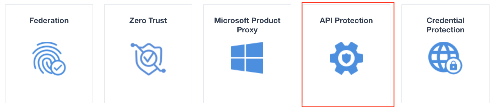
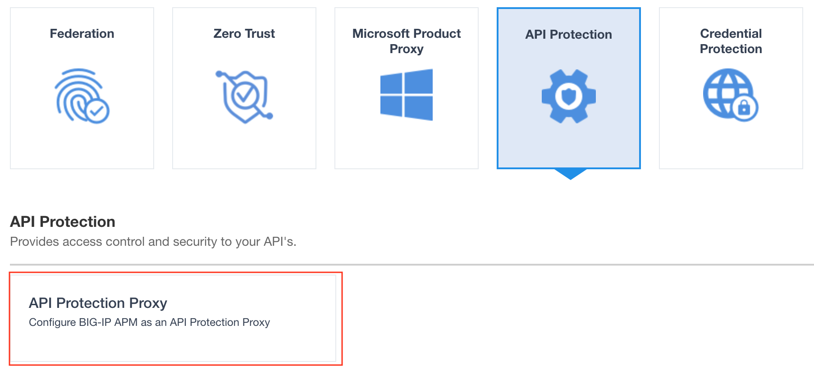
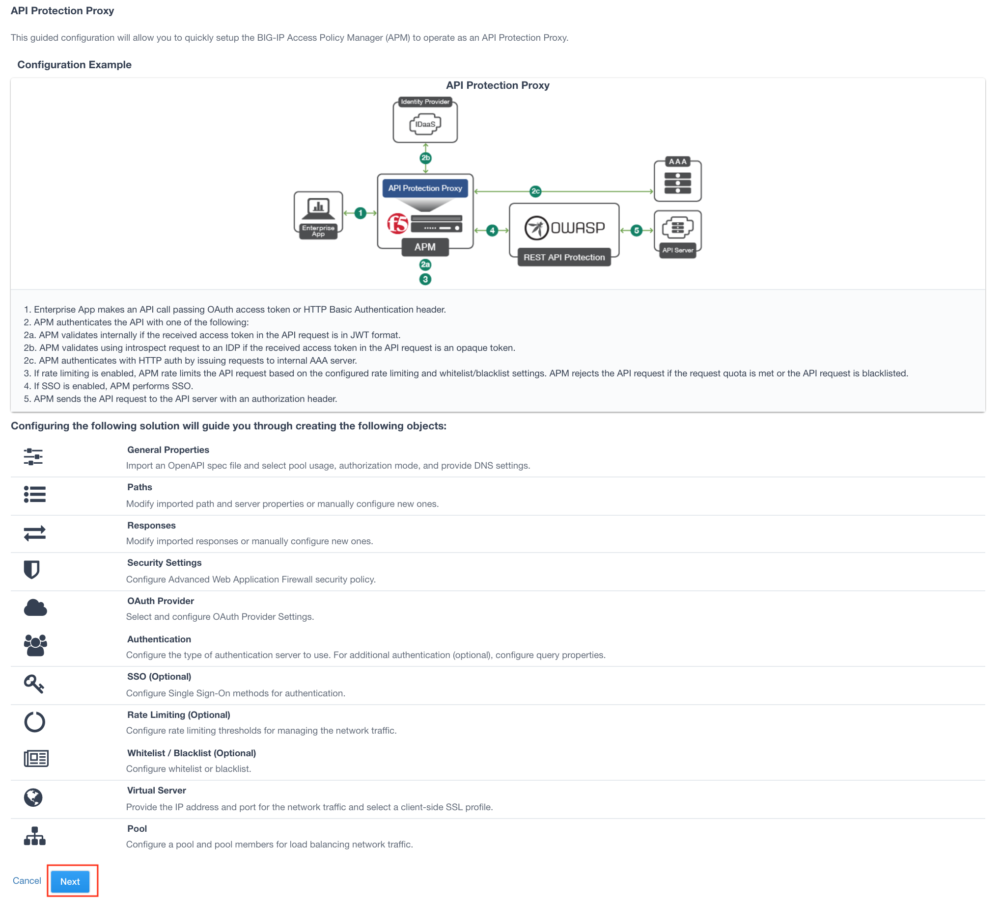

2.1.1. Lab – Create Authentication objects¶
The first step in deploying CertSSO is creating the objects required for the user to authenticate to APM. In this lab the user will authenticate via Active Directory and simulated MFA via RADIUS. How the user authenticates to APM is independent of how the BIG-IP authenticates the user to the server for Single-Sign-On. This allows an organization to choose an authentication scheme that matches their organizations needs such as SAML, OAuth, or other method.
2.1.1.1. Task – Create an Active Directory AAA Object¶
- From the webbrowser, click on the Access tab located on the lefthand side.

- Go Authentication>Active Directory, then click the + symbol to create a new AAA object

- Enter the following information for the AD Authentication Object
- Name: f5lab.local
- Domain Name: f5lab.local
- Domain Controller Pool Name: AD_POOL
- Domain Controller IP address: 10.1.20.7
- Domain Controller Hostname: dc.f5lab.local
- admin name: admin
- admin Password: admin
Click Finished

- Go Authentication>Active Directory, then click the + symbol to create a new AAA object
2.1.1.2. Task – Create an Active Directory AAA Object¶
- From the webbrowser, click on the Access tab located on the lefthand side.
- Go Authentication>RADIUS, then click the + symbol to create a new AAA object

- Enter the following information for the AD Authentication Object
-Name: RADIUS_SERVERS -Server Pool Name: RADIUS_POOL - secret password: secret
